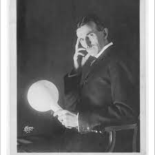

Building upon the revelations of the Tesla coil, Tesla sought to offer wireless power for free to all by transmitting information from one tower to another using resonance. The currents were sent from one circuit to the other, building in frequency until lightning sparked from one tower to the other. By connecting a wire to the tower and running it around his lab, he powered his laboratory wirelessly. He demonstrated the effect on stage to audiences using light bulbs that were not connected to any power source. The magnifying transmitter succeeded in transmitting an electrical current a kilometer away.
Nikola Tesla
Nikola Tesla
Nikola Tesla Born :
Nikola Tesla, (born July 9/10, 1856, Smiljan, Austrian Empire [now in Croatia]—died January 7, 1943, New York, New York, U.S.), Serbian American inventor and engineer who discovered and patented the rotating magnetic field, the basis of most alternating-current machinery. He also developed the three-phase system of electric power transmission. He immigrated to the United States in 1884 and sold the patent rights to his system of alternating-current dynamos, transformers, and motors to George Westinghouse. In 1891 he invented the Tesla coil, an induction coil widely used in radio technology. Tesla was from a family of Serbian origin. His father was an Orthodox priest; his mother was unschooled but highly intelligent. As he matured, he displayed remarkable imagination and creativity as well as a poetic touch.
Nikola Tesla Inventions:
Nikola Tesla inventions constitute numerous technological breakthroughs throughout his lifetime. Born in
Smiljan, Croatia, in 1856, the math and physics genius contributed innovations that continue to impact
our lives daily today. He held over three hundred patents, but was only recognized for some, indicating
many of his ideas were tested and failed or never became well known.
In 1882, upon graduation from the Technical University of Graz and Philosophy at the University of
Prague, he drew the first sketches of his idea to build an electromagnetic motor. His first job entailed
retailing DC power plants for ConEd which led to his immigration to the states in 1884.
Tesla’s inventions included:
Perhaps the most familiar symbol of Tesla’s work is the Tesla coil, embodied in the tower that was erected at what is now the last remaining laboratory located in Shoreham, New York, the Tesla Science Center at Wardenclyffe. Here, Tesla created a tower topped by his infamous coils which shot electric sparks through the air and circulated the electricity around the coils by alternating current.
Tesla developed a piston engine to power automobiles using combustion to rotate disks. At the time, commonly used turbines were less efficient and relied on blades. Tesla’s invention merged many disks to create a centrifugal pump. By moving fluid in the path of least resistance, his turbine was more fuel-efficient. His turbine is also known as “…the boundary-layer turbine, cohesion-type turbine, and Prandtl-layer turbine it uses the boundary-layer effect and not a fluid impinging upon the blades as in a conventional turbine.
The Shadowgraph is another name for x-rays, but Tesla’s term is actually more depictive of the process. An x-ray creates a silhouette of the area captured by passing radioactive waves through the human body. Although the invention was initially developed by Rontgen, Tesla made improvements to the technique to render clearer images.
Before his lab burned down, Tesla was working on developing a radio intended to transmit a signal fifty miles. Prior to its completion, however, another gentleman received a patent for a similar radio design in England. Had he succeeded, Nikola Tesla’s invention would have surpassed the Brit’s invention in strength.
The neon lamp (or sign) was Tesla’s modification of existing neon light technology to form words and designs. Neon signs continue to exist worldwide, lighting up bars, casinos, hotels, and other signs along the roadway.
Tesla used radio transmission to power the first radio-controlled toy boat, controlling its engine, lighting and steering with a remote control. Today’s drones are based on this technology. While some viewed his invention as a contribution to warfare, i.e. torpedoes, Tesla considered it the beginning of robotic technology which would eventually handle the majority of labor for man.
Using electromagnets to spin, Tesla’s induction motor currently powers everyday household items such as vacuums, hairdryers and power tools.
The Niagara Falls Commission selected Tesla to design the hydroelectric power generator at Niagara Falls using his alternating power technology. Considered the first power plant, Tesla’s technology was used throughout the world to provide electricity to the masses.
ABOUT
Nikola Tesla
Born: July 9, 1856 or July 10, 1856
Died: January 7, 1943 New York